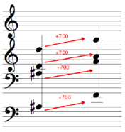

OpenMusic DocumentationHiérarchie de section : OM 6.6 User Manual > Visual Programming II > Iterations: OMLoop > Iteration
OpenMusic DocumentationHiérarchie de section : OM 6.6 User Manual > Visual Programming II > Iterations: OMLoop > Iteration
Navigation : page précédente | page suivante
Attention, votre navigateur ne supporte pas le javascript ou celui-ci à été désactivé. Certaines fonctionnalités de ce guide sont restreintes.
Iteration (Introduction)
OMLoop is a visual program that executes iterative processes such as transposition, combinatorial manipulations, scale building, or more sophisticated operations. As such, it is frequently needed and may be required as soon as the user gets to the thick of things.
Iteration
Iteration is the repetition of a process in order to apply it to a series of items.
Example : Transposing a Chord
Transposing a chord actually amounts to adding the same value to each note it is composed of. Therefore, this process requires the iteration of an addition corresponding to the number of pitches in the chord. |

|
Widespread Use of Iteration
Simple combinatorial operations may require much more sophisticated programs as it seems, and cannot be designed without resorting to iteration.
For instance, building a series is a basic, frequent process, which can be easily executed with a pen and a staff. But as long as we wish to systematize it, extend it, or reproduce it a number of time, we need to resort to programs requiring an iteration. At the end of the OMLoop section, you will find a detailed example showing how such program can be designed and extended beyond the context of the traditional 12 semitones series.
You are nevertheless invited to assimilate the notions expounded in the following sections before looking this example out.
Références :
Plan :
Navigation : page précédente | page suivante
A propos...(c) Ircam - Centre Pompidou